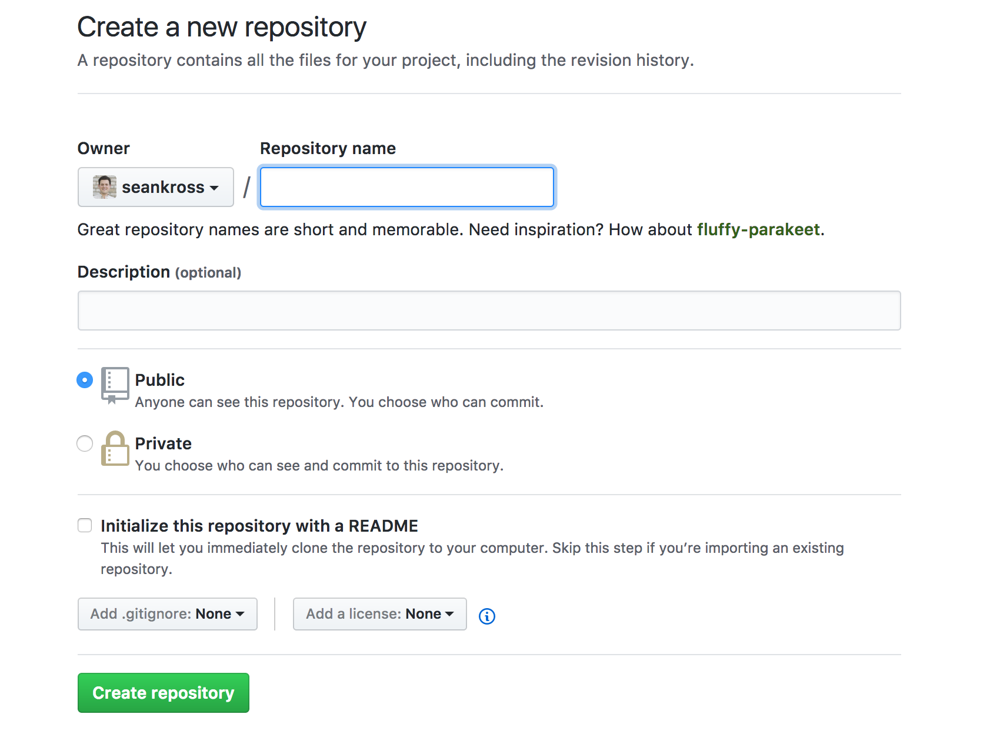
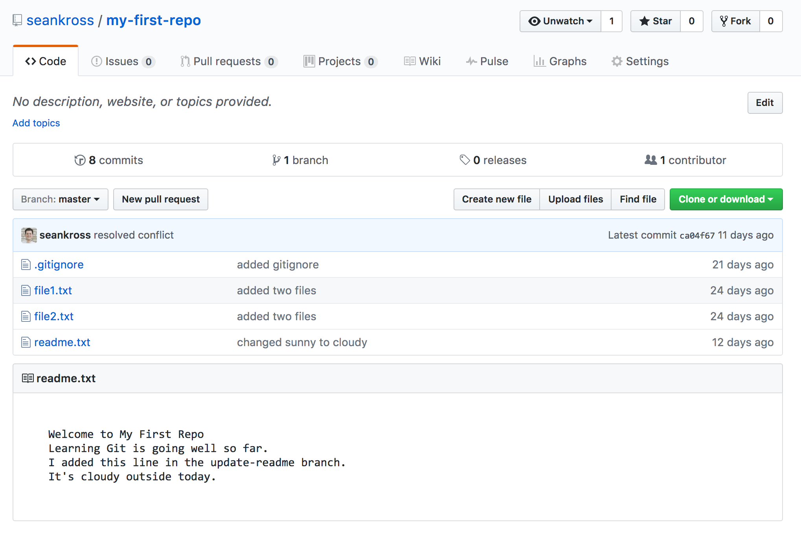
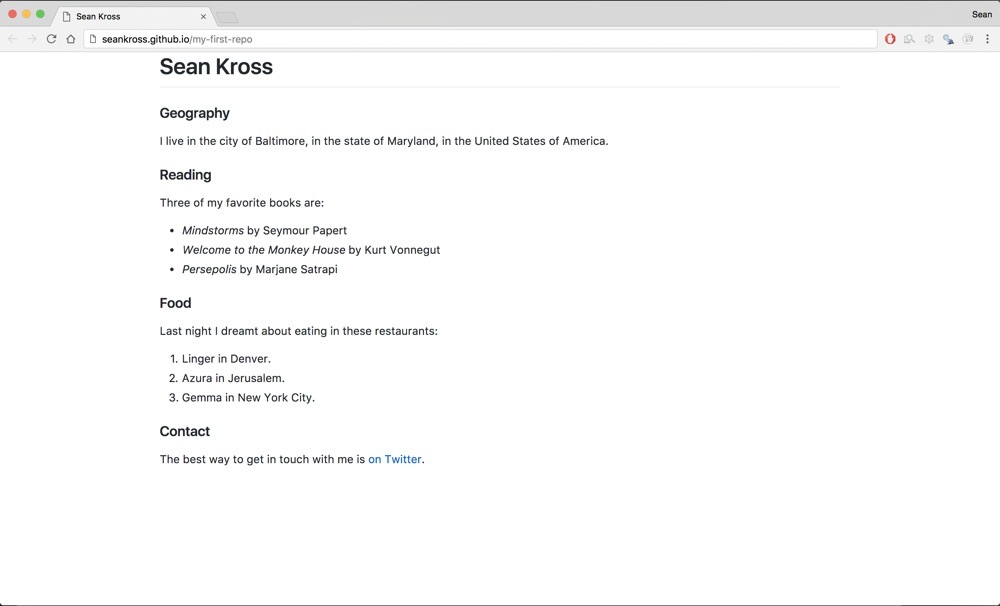

title: "The Unix Workbench" author: "Sean Kross" date: "2019-01-22" github-repo: seankross/the-unix-workbench url: 'https://github.com/seankross/the-unix-workbench' description: ""
Git and GitHub
Proof rather than argument. - Japanese proverb
What are Git and GitHub?
Git is a command line program which allows you to track versions of any code or plain text documents that you create. Like the "track changes" feature of a word processor Git keeps track of who made particular changes, the time and date of those changes, and where the changes were made. If a critical file gets deleted by accident, or if you make a breaking change to your code and you want to try to figure out where the breaking change was made, you can use Git to restore the deleted file or find the new bug in your program. Git organizes groups of files that you're tracking into a repository, which is just a directory where all of the changes to files in that directory are tracked. Git can also help you collaborate with others when you're writing software. As Karl Broman says (paraphrasing Mark Holder): "Your closest collaborator is you six months ago, but you don’t reply to emails."
GitHub is a website that provides remote Git repositories. A remote repository is just a Git repository that you're able to access over an internet connection. GitHub allows you to create public remote repositories for free, and anyone can see your code in these public repositories. If you want to keep your code private then you can pay GitHub for private remote repositories.
If you're working on code together with a friend GitHub can help you sync changes to code files between you and your friend. There's also a social and community aspect to GitHub, since you can watch other programmers develop their projects. GitHub also makes it easy to jump in and help somebody with their project. GitHub offers many other useful features which we will discuss at length.
Setting Up Git and GitHub
Before setting up Git, go to GitHub and create a free account. Take note of which email address you use and which username you choose.
To see if you have Git installed open up your terminal and enter the following:
## git version 2.14.3 (Apple Git-98)
If you don't get a response back telling you the version of Git that you have installed then you need to install Git. You can find instructions for installing Git on your operating system here.
Open up your shell once you have git installed and run git --version again to make sure that installation succeeded (you may need to restart your shell or your computer). After Git is installed we need to set up two environmental variables, but we only need to do this once. The first variable we need to set up with Git is your GitHub user name, and the second variable is the email address that you used to create your GitHub account:
git config --global user.name "myUserName"
git config --global user.email myName@email.com
Getting Started with Git
Let's create our first Git repository. First we need to create a directory:
cd
mkdir my-first-repo
cd my-first-repo
"Repo" in this case is just shorthand for "repository." To start tracking files with Git in a directory enter git init into the command line:
## Initialized empty Git repository in /Users/sean/my-first-repo/.git/
You've just created your first repository! Now let's create a file and start tracking it.
echo "Welcome to My First Repo" > readme.txt
Now that we've created a file in this Git repository, let's use git status to see what's going on in this repository. We'll be using git status continuously throughout this chapter in order to get information about the status of this Git repository.
## On branch master
##
## Initial commit
##
## Untracked files:
## (use "git add <file>..." to include in what will be committed)
##
## readme.txt
##
## nothing added to commit but untracked files present (use "git add" to track)
As you can see readme.txt is listed as an untracked file. In order to let Git know that you want to track this file we need to use git add with the name of the file that we want to track. Let's start tracking readme.txt:
Git now knows to track any changes to readme.txt. Let's see how the status of the repository has changed:
## On branch master
##
## Initial commit
##
## Changes to be committed:
## (use "git rm --cached <file>..." to unstage)
##
## new file: readme.txt
##
Git is now tracking readme.txt, or in Git-specific language readme.txt is now staged. Between the parentheses in the message above you can see that git status is giving us a tip about how to unstage (or un-track) this file, which we could do with git rm --cached readme.txt. Let's unstage this file just to see what happens:
git rm --cached readme.txt
## rm 'readme.txt'
## On branch master
##
## Initial commit
##
## Untracked files:
## (use "git add <file>..." to include in what will be committed)
##
## readme.txt
##
Our repository is right back to the way it started with readme.txt as an unstaged file. Let's start tracking readme.txt again so we can move on to cooler Git features.
Now that Git is tracking readme.txt we need to create a milestone to indicate the changes that we made to readme.txt. In this case, the changes that we made were creating the file in the first place! This milestone is called a commit in Git. A commit logs the content of all of the currently staged files. Right now we only have readme.txt staged so let's commit the creation of this file. When making a Git commit, we need to write a commit message which is specified after the -m flag. The message should briefly describe what changes you've made since the last commit.
git commit -m "added readme.txt"
## [master (root-commit) 73e53ca] added readme.txt
## 1 file changed, 1 insertion(+)
## create mode 100644 readme.txt
The message above confirms that the commit succeeded and it summarizes the changes that took place since the last commit. As you can see in the message we only changed one file, and we only changed one line in that file. Let's run git status again to see the state of our repository after we've made the first commit:
## On branch master
## nothing to commit, working tree clean
All of the changes to the files in this repository have been committed! Let's add a few more files to this repository and commit them.
touch file1.txt
touch fil2.txt
ls
## file1.txt
## fil2.txt
## readme.txt
While we're at it let's also add a new line of text to readme.txt:
echo "Learning Git is going well so far." >> readme.txt
Now that we've added two more files and we've made changes to one file let's take a look at the state of this repository.
## On branch master
## Changes not staged for commit:
## (use "git add <file>..." to update what will be committed)
## (use "git checkout -- <file>..." to discard changes in working directory)
##
## modified: readme.txt
##
## Untracked files:
## (use "git add <file>..." to include in what will be committed)
##
## fil2.txt
## file1.txt
##
## no changes added to commit (use "git add" and/or "git commit -a")
We can see that Git has detected that one file has been modified, and that there are two files in this directory that it is not tracking. Now we need to tell Git to track the changes to these files. We could tell Git to track changes to each file using git add, or since all of the files in this repository are .txt files we could use a wildcard and enter git add *.txt into the console. However if we want to track all of the changes to all of the files in our directory we should use the command git add -A.
## On branch master
## Changes to be committed:
## (use "git reset HEAD <file>..." to unstage)
##
## new file: fil2.txt
## new file: file1.txt
## modified: readme.txt
##
Now the changes to all of the files in this repository are being tracked. Finally let's commit these changes:
git commit -m "added two files"
## [master 53a1983] added two files
## 3 files changed, 1 insertion(+)
## create mode 100644 fil2.txt
## create mode 100644 file1.txt
Darn it, now looking at this commit summary I realize that I have a typo in one of the names of my files! Thankfully we can undo the most recent commit with the command git reset --soft HEAD~:
git reset --soft HEAD~
git status
## On branch master
## Changes to be committed:
## (use "git reset HEAD <file>..." to unstage)
##
## new file: fil2.txt
## new file: file1.txt
## modified: readme.txt
##
This repo is now in that exact same state it was right before we made the commit. Now we can rename fil2.txt to file2.txt, then let's look at the status of the repository again.
mv fil2.txt file2.txt
git status
## On branch master
## Changes to be committed:
## (use "git reset HEAD <file>..." to unstage)
##
## new file: fil2.txt
## new file: file1.txt
## modified: readme.txt
##
## Changes not staged for commit:
## (use "git add/rm <file>..." to update what will be committed)
## (use "git checkout -- <file>..." to discard changes in working directory)
##
## deleted: fil2.txt
##
## Untracked files:
## (use "git add <file>..." to include in what will be committed)
##
## file2.txt
##
We previously told Git to track fil2.txt, and we can see that Git acknowledges that the file has been deleted. We can bring Git up to speed with what files it should be tracking with git add -A:
## On branch master
## Changes to be committed:
## (use "git reset HEAD <file>..." to unstage)
##
## new file: file1.txt
## new file: file2.txt
## modified: readme.txt
##
Finally we got the file names right! Now let's make the correct commit:
git commit -m "added two files"
## [master 12bb9f5] added two files
## 3 files changed, 1 insertion(+)
## create mode 100644 file1.txt
## create mode 100644 file2.txt
That looks much better.
Summary
- Git tracks changes to plain text files (code files and text documents).
- A directory where changes to files are tracked by Git is called a Git repository.
- Change your working directory, then run
git init to start a repository.
- You can track changes to a file using
git add [names of files].
- You can create a milestone about the state of your files using
git commit -m "message about changes since the last commit".
- To examine the state of files in your repository use
git status.
Exercises
- Start a repository in a new directory.
- Create a new file in your new Git repository. Make sure Git is tracking the file and then create a new commit.
- Make changes to the file, and then commit these changes.
- Add two new files to your repository, but only commit one of them. What is the status of your repository after the commit?
- Undo the last commit, add the untracked file, and redo the commit.
Important Git Features
Getting Help, Logs, and Diffs
Git commands have their own man pages. You can access them with git help [name of command]. For example here's the start of the help page for git status:
GIT-STATUS(1) Git Manual GIT-STATUS(1)
NAME
git-status - Show the working tree status
SYNOPSIS
git status [<options>...] [--] [<pathspec>...]
DESCRIPTION
Displays paths that have differences between the index file and the current HEAD commit,
paths that have differences between the working tree and the index file, and paths in the
working tree that are not tracked by Git (and are not ignored by gitignore(5)). The first
are what you would commit by running git commit; the second and third are what you could
commit by running git add before running git commit.
Just like any other help page that uses less, you can return to the prompt with the Q key.
If you want to see a list of your Git commits, enter git log into the console:
## commit 12bb9f53b10c9b720dac8441e8624370e4e071b6
## Author: seankross <sean@seankross.com>
## Date: Fri Apr 21 15:23:59 2017 -0400
##
## added two files
##
## commit 73e53cae75301ce9b2802107b1956447241bb17a
## Author: seankross <sean@seankross.com>
## Date: Thu Apr 20 14:15:26 2017 -0400
##
## added readme.txt
If you've made many commits to a repository you might need to press the Q key in order to get back to the prompt. Each commit has its time, date, and commit message recorded, along with a SHA-1 hash that uniquely identifies the commit.
Git can also help show the differences between unstaged changes to your files compared to the last commit. Let's add a new line of text to readme.txt:
echo "I added a line." >> readme.txt
git diff readme.txt
## diff --git a/readme.txt b/readme.txt
## index b965f6a..a3db358 100644
## --- a/readme.txt
## +++ b/readme.txt
## @@ -1,2 +1,3 @@
## Welcome to My First Repo
## Learning Git is going well so far.
## +I added a line.
As you can see a plus sign shows up next to the added line. Now let's open up this file in a text editor so we can delete the second line.
nano readme.txt
# Delete the second line
git diff readme.txt
## diff --git a/readme.txt b/readme.txt
## index b965f6a..e173fdf 100644
## --- a/readme.txt
## +++ b/readme.txt
## @@ -1,2 +1,2 @@
## Welcome to My First Repo
## -Learning Git is going well so far.
## +I added a line.
A minus sign appears next to the line we deleted. Let's take a look at the status of our directory at this point.
## On branch master
## Changes not staged for commit:
## (use "git add <file>..." to update what will be committed)
## (use "git checkout -- <file>..." to discard changes in working directory)
##
## modified: readme.txt
##
## no changes added to commit (use "git add" and/or "git commit -a")
If you read the results from git status carefully you can see that we can take this repository in one of two directions at this point. We can either git add the files we've made changes to in order to track those changes, or we can use git checkout in order to remove all of the changes we've made to a file to restore its content to what was present in the last commit. Let's remove our changes to see how this works.
## Welcome to My First Repo
## I added a line.
git checkout readme.txt
cat readme.txt
## Welcome to My First Repo
## Learning Git is going well so far.
And as you can see the changes we made to readme.txt have been undone.
Ignoring Files
Sometimes you might have files that you never want Git to track, for example binary files that are generated as by-products of running code (PDFs or images), or secrets like passwords or API keys. A file in your Git repository called .gitignore can list names of files and sub-folders, or simple regular expressions (whatever you can use with ls) in order to specify files which should never be tracked. Each line of a .gitignore file should specify a file or group of files that should not be tracked by Git. Let's make a .gitignore file to make sure that we never track image files in this repository:
touch toby.jpg
git status
## On branch master
## Untracked files:
## (use "git add <file>..." to include in what will be committed)
##
## toby.jpg
##
## nothing added to commit but untracked files present (use "git add" to track)
Now that we've added an image to our repository, let's add a .gitignore file to make sure Git doesn't track these kinds of files.
echo "*.jpg" > .gitignore
git status
## On branch master
## Untracked files:
## (use "git add <file>..." to include in what will be committed)
##
## .gitignore
##
## nothing added to commit but untracked files present (use "git add" to track)
Now we can see that Git has detected the new .gitignore file, but it doesn't see toby.jpg. Let's add and commit our .gitignore file:
git add -A
git commit -m "added gitignore"
## [master adef548] added gitignore
## 1 file changed, 1 insertion(+)
## create mode 100644 .gitignore
Now if we add another .jpg file, Git will not see the file:
touch bernie.jpg
git status
## On branch master
## nothing to commit, working tree clean
## bernie.jpg
## toby.jpg
## file1.txt
## file2.txt
## readme.txt
Summary
git help allows you to read the man pages for specific Git commands.git log will show you your commit history.git diff displays what has changed between the last commit and your current untracked changes.- You can specify a
.gitignore file in order to tell Git not to track certain files.
Exercises
- Look at the help pages for
git log and git diff.
- Add to the
.gitignore you already started to include a specific file name, then add that file to your repository.
- Create a file that contains the Git log for this repository. Use
grep to see which day of the week most of the commits occurred on.
Branching
Branching is one of the most powerful features that Git offers. Creating different Git branches allows you to work on a particular feature or set of files independently from other "copies" of a repository. That way you and a friend can work on different parts of the same file on different branches, and then Git can help you elegantly merge your branches and changes together.
You can list all of the available branches with the command git branch:
## * master
The star (*) indicates which branch you're currently on. The default branch that is created is always called master. Usually people use this branch as the working version of the software that they are writing, while they develop new and potentially unstable features on other branches.
To add a branch we'll also use the git branch command, followed the name of the branch we want to create:
git branch my-new-feature
Now let's enter git branch again to confirm that we've created the branch:
## * master
## my-new-feature
We can make my-new-feature the current branch using git checkout with the name of the branch:
git checkout my-new-feature
## Switched to branch 'my-new-feature'
## master
## * my-new-feature
If we look at git status we can also see that it will tell us which branch we're on:
On branch my-new-feature
nothing to commit, working tree clean
We can switch back to the master branch using git checkout:
## Switched to branch 'master'
## * master
## my-new-feature
Now we can delete a branch by using the -d flag with git branch and the name of the branch we want to delete:
git branch -d my-new-feature
## Deleted branch my-new-feature (was adef548).
## * master
Let's create a new branch for adding a section to the readme.txt in our repository. We can create a new branch and switch to that branch at the same time using the command git checkout -b and the name of the new branch we want to create:
git checkout -b update-readme
## Switched to a new branch 'update-readme'
Now that we've created and switched to a new branch, let's make some changes to a file. As you might be expecting right now we'll add a new line to readme.txt:
echo "I added this line in the update-readme branch." >> readme.txt
cat readme.txt
## Welcome to My First Repo
## Learning Git is going well so far.
## I added this line in the update-readme branch.
Now that we've added a new line let's commit these changes:
git add -A
git commit -m "added a third line to readme.txt"
## [update-readme 6e378a9] added a third line to readme.txt
## 1 file changed, 1 insertion(+)
Now that we've made a commit on the update-readme branch, let's switch back to the master branch, and then we'll take a look at readme.txt:
## Switched to branch 'master'
Now that we're on the master branch let's quickly glance at readme.txt:
## Welcome to My First Repo
## Learning Git is going well so far.
The third line that we added is gone! Don't fret, the line that we added isn't gone forever. We committed the change to this file while we were on the update-readme branch, so the updated file is safely in that branch. Let's switch back to that branch just to make sure:
git checkout update-readme
cat readme.txt
## Welcome to My First Repo
## Learning Git is going well so far.
## I added this line in the update-readme branch.
And the third line is back! Let's add and commit yet another line while we're on this branch:
echo "It's sunny outside today." >> readme.txt
git add -A
git commit -m "added weather info"
## [update-readme d7946e9] added weather info
## 1 file changed, 1 insertion(+)
This is a small example of how to use Git branching, but you can see how you can make incremental edits to plain text (usually code files) without affecting the master branch (the tested and working copy of your software) and without affecting any other branches. You can imagine how this system could be used for multiple people to work on the same codebase at the same time, or how you could develop and test multiple software features without them interfering with each other. Now that we've made a couple of changes to readme.txt, let's combine those changes with what we have in the master branch. This is made possible by a Git merge. Merging allows you to elegantly combine the changes that have been made between two branches. Let's merge the changes we made in the update-readme branch with the master branch. Git incorporates other branches into the current branch by default. When you're merging, the current branch is also called the base branch. Let's switch to the master branch so we can merge in the changes from the update-readme branch:
## Switched to branch 'master'
To merge in the changes from another branch we need to use git merge and the name of the branch:
## Updating adef548..d7946e9
## Fast-forward
## readme.txt | 2 ++
## 1 file changed, 2 insertions(+)
## Welcome to My First Repo
## Learning Git is going well so far.
## I added this line in the update-readme branch.
## It's sunny outside today.
It looks like you've merged your first branch in Git! Branching is part of what makes Git so powerful since it enables parallel developments on the same code base. But what if there are two commits in two separate branches that make different edits to the same line of text? When this occurs it is called a conflict. Let's create a conflict so we can learn how they can be resolved.
First we'll switch to the update-readme branch. Use nano to edit the last line of readme.txt, then commit your changes:
git checkout update-readme
nano readme.txt
cat readme.txt
## Welcome to My First Repo
## Learning Git is going well so far.
## I added this line in the update-readme branch.
## It's cloudy outside today.
Notice that we changed "sunny" to "cloudy" in the last line.
git add -A
git commit -m "changed sunny to cloudy"
Now that our changes are committed on the update-readme branch, let's switch back to master:
Let's change the same line of code using nano:
nano readme.txt
cat readme.txt
## Welcome to My First Repo
## Learning Git is going well so far.
## I added this line in the update-readme branch.
## It's windy outside today.
Now let's commit these changes:
git add -A
git commit -m "changed sunny to windy"
We've now created two commits that directly conflict with each other. On the update-readme branch the last line says It's cloudy outside today., while on the master branch the last line says It's windy outside today.. Let's see what happens when we try to merge update-readme into master.
## Auto-merging readme.txt
## CONFLICT (content): Merge conflict in readme.txt
## Automatic merge failed; fix conflicts and then commit the result.
Uh-oh, there's a conflict! Let's check the status of the repo right now:
## On branch master
## You have unmerged paths.
## (fix conflicts and run "git commit")
## (use "git merge --abort" to abort the merge)
##
## Unmerged paths:
## (use "git add <file>..." to mark resolution)
##
## both modified: readme.txt
##
## no changes added to commit (use "git add" and/or "git commit -a")
If you're getting used to reading the result of git status, you can see that it often offers suggestions about what steps you should take next. Git is indicating that both versions of readme.txt have modified the same text. Let's take a look at readme.txt to see what's going on there:
## Welcome to My First Repo
## Learning Git is going well so far.
## I added this line in the update-readme branch.
## <<<<<<< HEAD
## It's windy outside today.
## =======
## It's cloudy outside today.
## >>>>>>> update-readme
The first three lines of this file look normal, then things get interesting! The line between <<<<<<< HEAD and ======= shows the version of the conflicted line on the current branch. In Git terminology the HEAD represents the most recent commit on the branch which is currently checked out (which is master in this case). The line between ======= and >>>>>>> update-readme shows the version of the line on the update-readme branch. In order to resolve this conflict, all we need to do is open readme.txt with nano so we can delete the lines we want to get rid of. In this case let's keep the "cloudy" version.
nano readme.txt
cat readme.txt
## Welcome to My First Repo
## Learning Git is going well so far.
## I added this line in the update-readme branch.
## It's cloudy outside today.
Now we can commit the resolution of this conflict.
git add -A
git commit -m "resolved conflict"
You're now familiar with this basics of Git! If you want to go into further depth with your study of Git I highly recommend the free and open source book Pro Git.
Summary
- Git branching allows you and others to work on the same code base together.
- You can create a branch with the command
git branch [name of branch].
- To switch to a branch use
git checkout [name of branch].
- You can combine a branch with your current branch by using
git merge.
Exercises
- Start a new branch.
- Switch to that branch and add commits to it. Switch to an older branch and then merge the new branch into your current branch.
- Purposefully create and resolve a merge conflict.
GitHub
Now that you know the basics of using Git, let's talk about how you can share your work and start collaborating online using GitHub. As an added bonus, by the end of this chapter you will have created your very own website! To get started go to GitHub and sign in with the credentials we set up at the beginning of the chapter. After you sign in you should see a plus-sign near the top-right corner of your web browser. Click the plus-sign and a little menu should appear, then click "New repository." You should now see a screen that looks like this:

In the text box under Repository name type my-first-repo and then click the green Create repository button. Now you should see a page like this:
 GitHub offers a few suggestions about what to do with our new remote repository. We've already been using a local Git repository, and what GitHub provides is a remote Git repository. A remote Git repository is just a Git repository stored on a computer is that always turned on and connected to the internet, so it can act as a central point where we can share and sync our changes to files with our friends and colleagues. We can see which remote repositories our local repository is connected to with the
GitHub offers a few suggestions about what to do with our new remote repository. We've already been using a local Git repository, and what GitHub provides is a remote Git repository. A remote Git repository is just a Git repository stored on a computer is that always turned on and connected to the internet, so it can act as a central point where we can share and sync our changes to files with our friends and colleagues. We can see which remote repositories our local repository is connected to with the git remote command while we have our working directory set to my-first-repo:
Nothing is printed to the console since you haven't set any remotes up yet! Now let's add your new GitHub repository as a remote in your local repository:
git remote add origin https://github.com/seankross/my-first-repo.git
In the command above git remote add adds a new remote to your local repository, origin is the name we're assigning to this remote repository, and https://github.com/seankross/my-first-repo.git is the URL of the remote repository. You should of course substitute seankross for your GitHub user name so that it corresponds to your remote repository URL. Later I'll explain why "origin" is the name we chose for this remote. Let's run git remote again to confirm that we added the origin remote successfully:
## origin
Now that we've added our GitHub remote, let's perform our first Git push. A Git push updates a remote repository with all of the commits that we've made to our local Git repository. This first Git push you do when setting up a remote on GitHub with a local repository is a little different from future Git pushes. We'll need to use the -u flag in order to set origin as the default remote repository so we don't have to provide its name every time we want to interact with it. Enter the following command, modified so that you're using your GitHub user name:
git push -u origin master
## Counting objects: 23, done.
## Delta compression using up to 4 threads.
## Compressing objects: 100% (19/19), done.
## Writing objects: 100% (23/23), 1.88 KiB | 0 bytes/s, done.
## Total 23 (delta 9), reused 0 (delta 0)
## remote: Resolving deltas: 100% (9/9), done.
## To https://github.com/seankross/my-first-repo.git
## * [new branch] master -> master
## Branch master set up to track remote branch master from origin.
The command above pushed all of our commits to the remote repository on GitHub, and it set up the master branch of the origin remote repository as the default remote repository. Looking back at the web page for your repository on GitHub, it should look something like this:

One neat feature of GitHub is that readme files are rendered on the repository page so you can write documents which explain the contents of your repository. Let's get more creative with these readme documents by learning a small language called Markdown.
Markdown
Markdown is a markup language. Markup languages are sets of rules for adding decorative features to text. The most popular markup language is HTML, but you might have also heard of XML and LaTeX. Markdown is a powerful markup language because it's small, intuitive, and readable when it's written as plain text. GitHub transforms Markdown files (which end in the file extension .md) into simple HTML web pages in your repository. If there is a file called README.md in any folder in your repository, then that file is rendered to HTML and displayed on GitHub. Let's create a README.md file for our repository. First we'll destroy the plain text readme file we already have:
I've included a Markdown file below that attempts to explain some of Markdown's features. Copy the plain text below, create a new file called README.md with nano, paste the text in, and then save the file.
# This is a large heading
## This is a smaller heading
And as **imagination** bodies forth,
The forms of things *unknown*, the poet’s pen,
Turns them to shapes and gives to airy nothing,
A local *habitation* and a **name**.
- This is
- an unordered
- list
1. This is
2. an ordered
3. list
Here is `some code` in the middle of a sentence.
```
This is
a block
of code
```
Here is how you make [a link](https://www.wikipedia.org/).

Now let's add our changes, make a commit, and push those changes to our remote repository:
git add -A
git commit -m "added README.md"
git push
## Counting objects: 3, done.
## Delta compression using up to 4 threads.
## Compressing objects: 100% (3/3), done.
## Writing objects: 100% (3/3), 659 bytes | 0 bytes/s, done.
## Total 3 (delta 0), reused 0 (delta 0)
## To https://github.com/seankross/my-first-repo.git
## ca04f67..2169912 master -> master
Since we set up a default remote repository the first time we pushed, we can now simply enter git push in order to send our latest commits to the master branch on the origin remote. Now the page on GitHub for your repository should look something like this:

We've got a much more complex readme file! Notice how the plain text that we wrote has been rendered according to a few rules:
- Pound signs (
#, ##) make headings.
- A word surrounded by single asterisks (
*word*) makes that word italicized.
- A word surrounded by double asterisks (
**word**) makes that word bold.
- You can create lists with hyphens (
-) or numbers (1., 2., 3.).
- Code can be placed in the middle of a line with single backticks (
`code`).
- A code block can be created by putting code in between a set of triple backticks (
```).
- You can insert a link with brackets and parentheses (
[Link text here](http://jhu.edu)).
- You can use an image with an exclamation point, and a link to an image (
)
Personally I really enjoy writing with Markdown, to the point where I wrote this entire book in Markdown! We're going to be using Markdown for the rest of this chapter, so I suggest that you take a few minutes to play around with the syntax in this in-browser Markdown editor. For more information about Markdown see GitHub's helpful Mastering Markdown guide.
Pull Requests
The next two features of GitHub we're going to discuss - pull requests and forking - are what make GitHub so great. A pull request allows you to interactively compare two different branches before you merge them so you can either go ahead with the merge or provide feedback to whoever opened the pull request. Essentially a pull request allows a person to ask another person if they're willing to incorporate changes on one branch into another branch. This social coding transaction may involve you and a collaborator, you and a stranger, or you might open a pull request on your own repository just as a method of staying organized.
Since I can't guarantee that you have a collaborator I'll show you how to open a pull request on your own repository. First in your local my-first-repo repository let's switch over to the update-readme branch.
git checkout update-readme
## Switched to branch 'update-readme'
Let's take a look at what's currently on this branch:
## bernie.jpg
## toby.jpg
## file1.txt
## file2.txt
## readme.txt
It looks like we haven't updated this branch to be current with the master branch. We can easily do this by merging in the master branch.
## Updating 5aa94fa..2169912
## Fast-forward
## README.md | 28 ++++++++++++++++++++++++++++
## readme.txt | 4 ----
## 2 files changed, 28 insertions(+), 4 deletions(-)
## create mode 100644 README.md
## delete mode 100644 readme.txt
Now the master and update-readme branches are identical. Let's clean up this directory so that you can make a little personalized Markdown project. First let's delete all of the files in this directory that we don't really need, meaning everything except README.md.
## README.md
Now that we've cleaned up our repository let's open up README.md with nano. Delete everything that's written there and write a few lines about yourself. In the block of text below you can see what I've written in README.md.
# Sean Kross
### Geography
I live in the city of Baltimore, in the state of Maryland, in the United States
of America.
### Reading
Three of my favorite books are:
- *Mindstorms* by Seymour Papert
- *Welcome to the Monkey House* by Kurt Vonnegut
- *Persepolis* by Marjane Satrapi
### Food
Last night I dreamt about eating in these restaurants:
1. Linger in Denver.
2. Azura in Jerusalem.
3. Gemma in New York City.
### Contact
The best way to get in touch with me is [on Twitter](https://twitter.com/seankross).
Once you've written up a few fun things about yourself, add your changes, and make a new commit.
git add -A
git commit -m "made readme more personal"
Like a local Git repository, remote repositories on GitHub can have multiple branches. Let's push this commit to the update-readme branch on GitHub:
git push origin update-readme
## Counting objects: 3, done.
## Delta compression using up to 4 threads.
## Compressing objects: 100% (3/3), done.
## Writing objects: 100% (3/3), 630 bytes | 0 bytes/s, done.
## Total 3 (delta 0), reused 0 (delta 0)
## To https://github.com/seankross/my-first-repo.git
## * [new branch] update-readme -> update-readme
Notice that we needed to specify which remote we were pushing to since GitHub didn't previously know about the existence of the update-readme branch. When you perform a git push, only the commits on the current branch are sent to the remote repository. That way you can create local branches that cannot be accessed from the remote repository, unless you explicitly push them to GitHub.
Now let's go back to the GitHub page for our repository. On the left side of the page you should see a button that says "Branch: master." Click on that button and a little drop-down menu should appear, as you can see below:

Click "update-readme" in the menu in order to view the files in that branch. You should see that the README.md files are different! You can switch back and forth between looking at branches using this menu.
Now that you've pushed an updated branch to GitHub, let's open a pull request. A pull request is like a guided git merge that is facilitated by GitHub. To start the pull request click the "New pull request" button next to the branch button (see the upper left corner of the image above). That button should take you to a page like this:

There are a few important details on this page, so let's go through them. First under the "Open a pull request" heading you can see the names of two branches. The branch name after "base:" shows the branch that changes are being merged into (in this case the master branch), and the branch name after "compare:" shows the branch that has the changes (in this case the update-readme branch).
In the text boxes below you can write a title for your pull request (the default title in this case is the name of the last commit) and you can write comments about the pull request which you can format with Markdown. If you're collaborating with somebody else on a project it's important to write good comments so that your collaborators know what changes you made in the branch you are requesting to merge. If you scroll down the page you can see a line-by-line comparison of the changes in the "compare" branch compared to the "base" branch. When you've finished going over these changes click the green "Create pull request" button in order to open the pull request. You should now see a screen like this:

Congratulations on opening your first pull request! Let's take a look at what's happening on this page. Below the title of the pull request we can see three tabs called Conversation, Commits, and Files changed. In the Conversation tab we can add comments to the pull request which can be formatted with Markdown. The Commits tab lists the commits that have been made to the "compare" branch in this pull request. Finally the Files changed tab shows the same line-by-line comparison we saw before.
Usually when you're working with collaborators there's a great deal of discussion that occurs after you open a pull request. Git commits that are pushed to the "compare" branch (update-readme in the case) of the GitHub repository will be reflected in a pull request even after the request has been opened. This way changes that are made as a result of the discussion can be easily incorporated. Once you're ready go back to the Conversation tab and click the green "Merge pull request" button, then click the green "Confirm merge" button that appears. This will git merge the "compare" branch into the "base" branch on our remote repository. You just merged your first pull request! Now click near the top left corner of this page on the <> Code tab, and you should see that the changes from the update-readme branch have been merged into master.
When working on a remote GitHub repository with many other folks these pull requests and merges can happen without you being involved at all if the commits affect parts of the code that you're not working on. Still it's important to keep your local repository up to date with the latest changes in the remote repository. Let's go back to your terminal where you have my-first-repo set as the current working directory. First let's switch to the master branch.
Now let's update our local master branch with the commits that have been merged into the master branch on our remote repository. We can accomplish this with the command git pull:
## remote: Counting objects: 1, done.
## remote: Total 1 (delta 0), reused 0 (delta 0), pack-reused 0
## Unpacking objects: 100% (1/1), done.
## From https://github.com/seankross/my-first-repo
## 2169912..b9217f6 master -> origin/master
## Updating 2169912..b9217f6
## Fast-forward
## README.md | 38 ++++++++++++++++++--------------------
## file1.txt | 0
## file2.txt | 0
## 3 files changed, 18 insertions(+), 20 deletions(-)
## delete mode 100644 file1.txt
## delete mode 100644 file2.txt
With git pull Git finds the master branch on the origin remote repository and updates our local repository with the new commits. You've now completed the full pull request life cycle! In the Forking section of this chapter we'll come back to discussing how GitHub super-charges pull requests in order to foster a greater coding community.
Pages
For now we're going to take a little detour to discuss GitHub Pages. GitHub Pages allows you to create and host a website on GitHub using only Git and Markdown. Go back to your my-first-repo repository page on GitHub on click the Settings tab at the top. Scroll down the page until you see a box that says GitHub Pages. Then click on the drop-down menu that says None. You should see a screen like this:

Click master branch and then click Save. Now go to the website [your-github-username].github.io/my-first-repo (in my case the address is seankross.github.io/my-first-repo) and you should see your very own website!

How cool is that!? If you want to change your new website all you need to do is edit your README.md then commit and push the changes! Websites like these are great for showing off projects, providing software documentation, creating online resumes, or writing a blog! GitHub pages websites can be as simple as a few Markdown documents, or if you know some web programming you can turn them into complex websites. For more information about GitHub Pages you can check out the documentation here.
Forking
If you're reading this book it's fairly safe to say that you probably interact with software every day. Software powers your computer, the internet, your phone, and this book. Considering all of the software you use, have you ever thought about modifying that software? Perhaps you could write some code to add a new feature you think would be useful or to fix a glitch that you've noticed. GitHub makes modifying other people's software easy through the process of forking. Forking a GitHub repository copies somebody else's GitHub repository into your GitHub account. You can then modify this copy of their software however you like. After you've added some commits to your copy of the repository you can keep the new commits to yourself, share them with others, or you can open up a pull request for your new commits to be merged into the original source repository. This original source repository (the repository you forked) is often called the upstream repository.
Let's try forking a repository now. Go to https://github.com/seankross/the-unix-workbench and click the Fork button in the upper right corner. GitHub will then ask you what account you want to use to fork the repository. If you're a new GitHub user then you only have one account, so select that account. After a brief "please wait" screen you should then see the forked repository at the URL https://github.com/[your-github-username]/the-unix-workbench. You've now forked the repository for this book! In order to get a local copy of the repository you'll need to use the git clone command. Cloning a repository copies a Git repository to your computer while keeping track of the remote repository that it originated from. Let's clone your fork of my repository now. On the right side of the repository page you should see a green button that says Clone or download. Click that button and the following menu should appear:

Click on the little clipboard icon which will copy the Git URL. Now go back to the terminal and change your working directory to your home directory.
## /Users/sean
Now let's clone the repository. Type git clone into the terminal and then paste in the Git URL we copied from GitHub:
git clone https://github.com/[your-github-username]/the-unix-workbench.git
## Cloning into 'the-unix-workbench'...
## remote: Counting objects: 669, done.
## remote: Compressing objects: 100% (7/7), done.
## remote: Total 669 (delta 2), reused 8 (delta 2), pack-reused 660
## Receiving objects: 100% (669/669), 4.00 MiB | 4.55 MiB/s, done.
## Resolving deltas: 100% (510/510), done.
Now cd into your cloned repository.
You've just successfully completed your first Git clone! Like we mentioned before, cloning has the advantage of keeping track of the remote repository that should be associated with the local repository. Let's test this by entering git remote with the added -v flag:
## origin https://github.com/[your-github-username]/the-unix-workbench.git (fetch)
## origin https://github.com/[your-github-username]/the-unix-workbench.git (push)
As you can see the default name of the remote repository after you clone that repository is origin. Now that you've cloned your fork you should add a commit! One change that I suggest is adding your name to guestbook.md. Let's do this now:
echo "- Sean Kross" >> guestbook.md # Add your own name of course!
cat guestbook.md
## # Guest Book
##
## - Sean Kross
Now add, commit, and push your changes:
git add guestbook.md
git commit -m "added my name to guestbook.md"
git push
Now that you've added your name to the guest book you can merge your change into my version of the guest book by opening up a new pull request as described in the previous section. If your pull request to the guest book is merged into the upstream repository (by me) then you will have completed the full GitHub lifecycle!
The process of forking a repository, making changes, and then opening a pull request is a very powerful workflow for seeing changes that you want made in the software world. Many large and important software projects have repositories on GitHub including operating systems, programming languages, and even Git itself! If there's a change you want to see in a public GitHub repository, fork that repository and make the change!
Summary
- You can use GitHub to create and host remote Git repositories.
- A remote Git repository is a Git repository that is always connected to the internet.
- List remote repositories with
git remote.
- Add remote repositories with
git remote add [name-of-remote] https://github.com/[username]/[repo-name].git
- Add commits to your remote repository with
git push [name-of-remote] [name-of-branch] or just git push if you've set up a default remote and branch.
- To merge commits on a remote repository into your local repository use
git pull [name-of-remote] [name-of-branch] or just git pull if you've set up a default remote and branch.
- A pull request allows you to interactively compare two different branches before you merge them.
- GitHub Pages allows you to host websites written in Markdown for free!
- Forking a repository allows you to make changes to a copy of a public repository. You can then open a pull request if you think your changes should be merged into the upstream repository!
Exercises
- Create a new repository on GitHub. Clone your repository and add a
README.md file. Push this file to GitHub and create a GitHub Pages website for this repository.
- Fork an existing repository (try one of mine: https://github.com/seankross) and try to identify something valuable you could contribute. Make changes or additions to that repository, then open a pull request.
- Read through GitHub's Guides.
From the "The Unix Workbench", by Sean Kross and released under  CC0 license (Zero rights reserved).
CC0 license (Zero rights reserved).